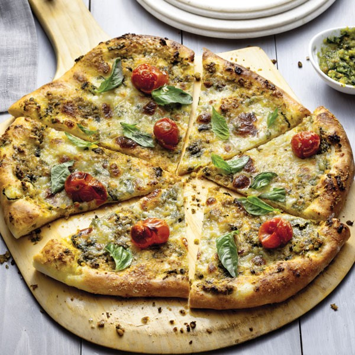

Pesto Pizza Recipe

Description
A mouthwatering favourite! This irresistable entree will delight any hungry child or the most discerning ahult.
The bold flavour of pesto coupled with hint of garlic, basil and parmesan cheese create the perfect blend to indugle the senses. The crispy, thin crust provides the ideal platform to present the ingredients.
Ingredients
For the dough:
- 3 cups all purpose flour
- 2 tablespoons extra virgin olive oil
- 2-1/4 teaspoons instant/rapid rise yeast
- 1-3/4 teaspoons salt
- 1 cup warm water
- 2 teaspoons cornmeal, for dusting the pan
For the toppings:
- 1/2 cup good quality homemade pesto
- 8 ounces whole milk mozzarella cheese, thinly sliced or grated
- 2 vine ripened tomatoes
- 1/4 cup grated Parmigiano-Reggiano
- 1/4 teaspoon salt
- Freshy ground black pepper
- 1/4 cup gently packed fresh basil leaves, torn
Steps
For the dough:
- Combine flour, water, olive oil, yeast and salt in a large bowl.(use a mixer with dough hook if you like)
- Mix until the dough comes together.
- Knead until the dough is smooth and elastic.
- Cover with plastic wrap and let rise in a warm place.(roughly 1 to 1-1/2 hours until the dough has doubled in size.
- Punch dough down and cut into two equal sizes
- Let dough rest under a damp cloth for about 15 to 20 min.
- On a lightly dusted surface, pat dough out into 8 by 12 inch rectangles. Place on a prepared cooking pan.
For the toppings:
- Cut tomatoes crosswise into 1/8 inch slices and place on a paper towel to drain.
- Spread 1/3 cup of the pesto evenly over the pizzas, leaving a 1 inch border.
- Bake the pizzas on the bottom rack of the oven for about 4 min.(to allow the crust to crisp up)
- Remove from the oven and top the pizzas with mozzarella first, followed by tomato slices, Parmigiano-Reggiano, salt and pepper.
- Place back in oven and bake until crust is crisp and brown.(about 6 to 8 minutes)
- Transfer the pizzas to a cutting board and top with remaining pesto.
- Sprinkle with fresh basil, cut into slices and serve. Enjoy!